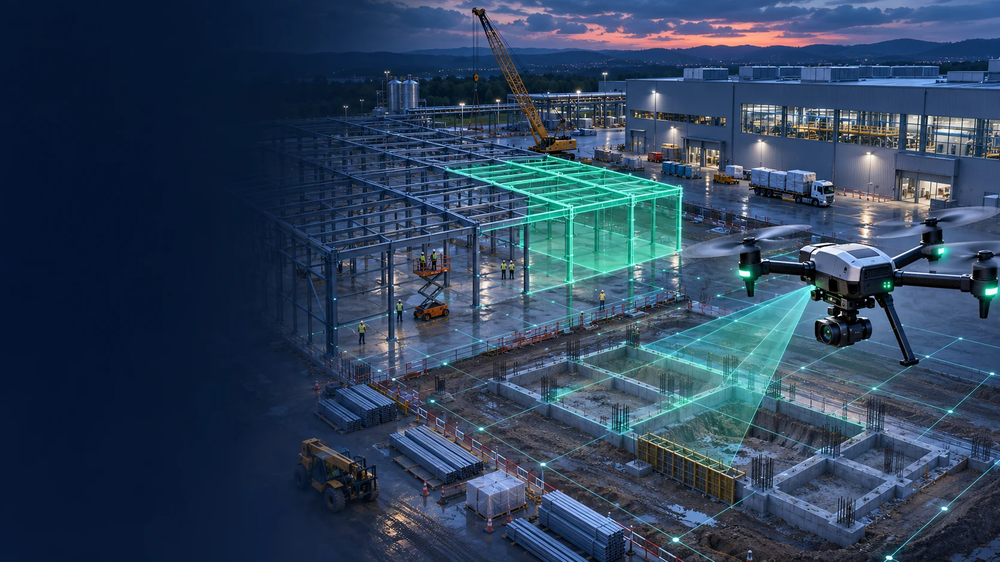

01 / Managed service
Robotics AI as a Service — Rental
Nordic Labs supplies and manages the solution under a recurring service agreement.
Equipment rental, software licensing and ongoing services are defined in the agreed scope.
From site evidence to operational decisions
Explore reference deployments of our Robotics AI systems, available as a fully managed service or a turnkey solution.
Choose your operating environment

Construction AI
Physical progress verification, construction deviations and reporting.
These are illustrative reference scopes, not guaranteed coverage or performance. Equipment selection, access, interfaces and acceptance criteria depend on site assessment and the agreed project scope.
01 / Managed service
Nordic Labs supplies and manages the solution under a recurring service agreement.
Equipment rental, software licensing and ongoing services are defined in the agreed scope.
02 / Customer ownership
The customer acquires the equipment and receives an installed, integrated solution under agreed licensing and support terms.
Equipment ownership is separate from software licensing and optional ongoing service contracts.
Under either commercial model, on-premises hosting on Nordic Labs-supplied hardware or deployment on customer-provided infrastructure may be available, subject to technical assessment and agreement.
Implementation journey / Construction AI
Target implementation timeline: six months, subject to agreed scope and technical prerequisites.
Survey site access, flight constraints and inspection routes. Deliver an agreed scope and a baseline of schedule and BIM data.
Define the deployment architecture, network access and compute requirements for site imagery and progress records.
Deploy the reference drone and quadruped, configure capture routes and document operating procedures.
Map observations to BIM elements and Primavera P6 activities through agreed interfaces.
Configure progress checks and deviation reports. Validate results against agreed site evidence and acceptance criteria.
Commission the agreed workflows, train the responsible team and hand over operating documentation and support arrangements.
Commercial planning / Construction AI
For Industrial construction site: 20,000 m², the proposal defines the following components. No prices are implied by this reference configuration.
Equipment basis: 1 drone and 1 quadruped robot. Integration basis: Primavera P6, BIM.
Rental
One-time scope and engineering fee, as agreed.
Purchase
One-time scope and engineering fee.
Rental
Supplied hardware under the service agreement, or customer-provided compute.
Purchase
Customer-owned supplied hardware, or customer-provided compute.
Rental
Recurring equipment rental under the agreed service scope.
Purchase
One-time acquisition of customer-owned equipment.
Rental
One-time setup, or included in the recurring agreement if agreed.
Purchase
One-time installation and commissioning.
Rental
One-time integration scope; ongoing changes priced separately as agreed.
Purchase
One-time integration scope; ongoing changes priced separately as agreed.
Rental
Initial configuration and validation; recurring services as agreed.
Purchase
One-time configuration and validation; subsequent changes as agreed.
Rental
Recurring service and licensing charges as agreed.
Purchase
Licensing terms and any recurring fees specified in the agreement.
Rental
Recurring managed-service scope as agreed.
Purchase
Optional service contracts; equipment responsibilities defined at handover.
One-time charges, recurring fees, customer-provided resources and optional contracts are itemized in a tailored proposal. Final terms require a written agreement.
Your site. Your agreed scope.
Discuss Construction AI, your systems and the commercial model that fits your project.
Request a Tailored Proposal